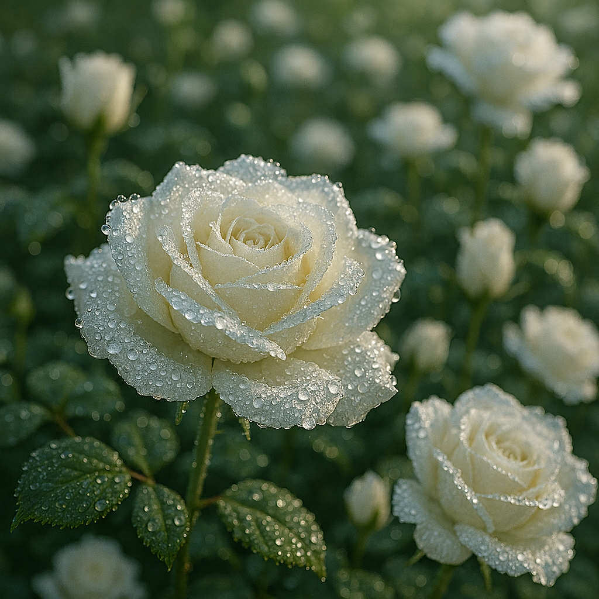

| picture no. |
picture |
description |
| 1 |
 |
A sunset over the ocean, framed by trees and blooming daisies, with warm orange and pink skies. |
| 2 |
 |
A calm beach with seashells, a starfish, a crab, and seagulls flying under a clear blue sky. |
| 3 |
 |
A tropical beach lined with palm trees and colorful flowers, with seagulls soaring above gentle waves. |
| 4 |
 |
A small wooden cabin in the mountains surrounded by pine trees, smoke rising from the chimney, cozy and warm mood. |
| 5 |
 |
A mountain with a waterfall, surrounded by colorful flowels and butterflies, under the soft morning light. |
| 6 |
 |
An icy mountain at sunset, light reflecting on the frozen lake, with people ice-skating. |
| 7 |
 |
A desert with golden sand dunes, tall cacti, scattered rocks, and a clear blue sky. |
| 8 |
 |
A desert at sunset, with palm trees, cacti, and a caravan of camels traveling. |
| 9 |
 |
A serene desert night with a bright full moon, glowing lanterns, fireflies, white flowers, and an engraved stone under a starry sky. |
| 10 |
 |
A close-up of a white rose covered with morning dew, ultra-realistic, highly detailed, soft natural light. |